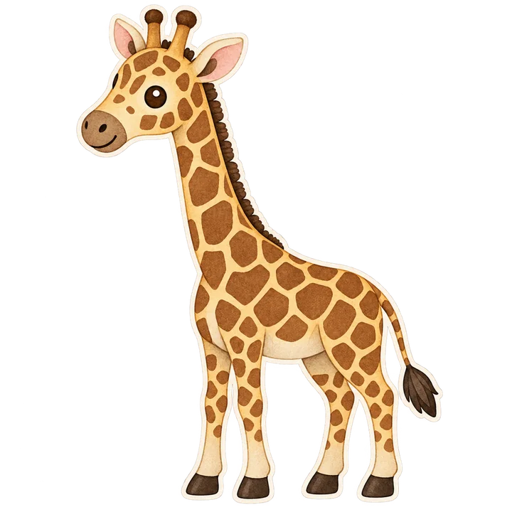
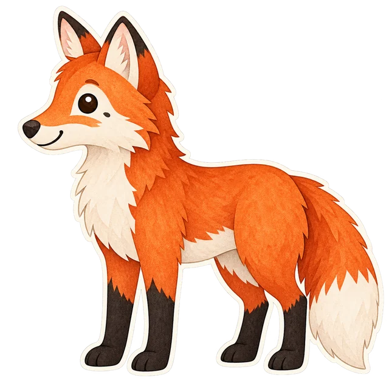
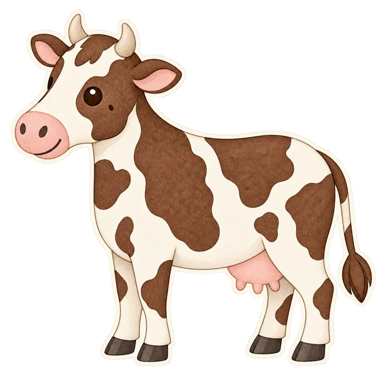
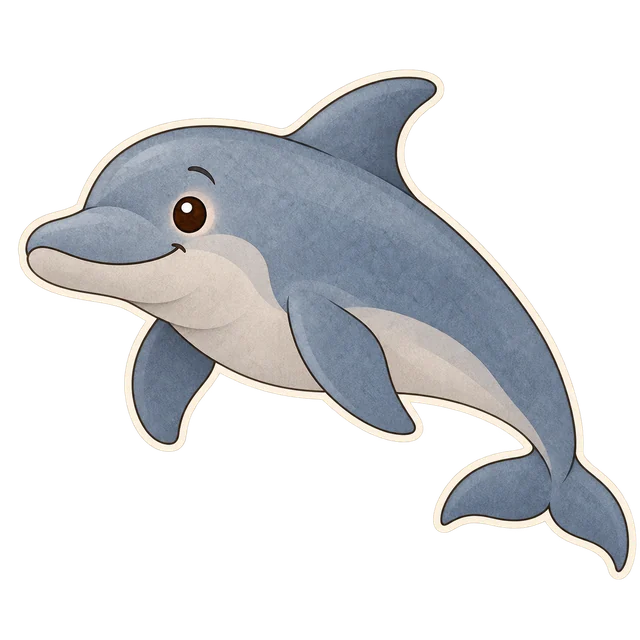
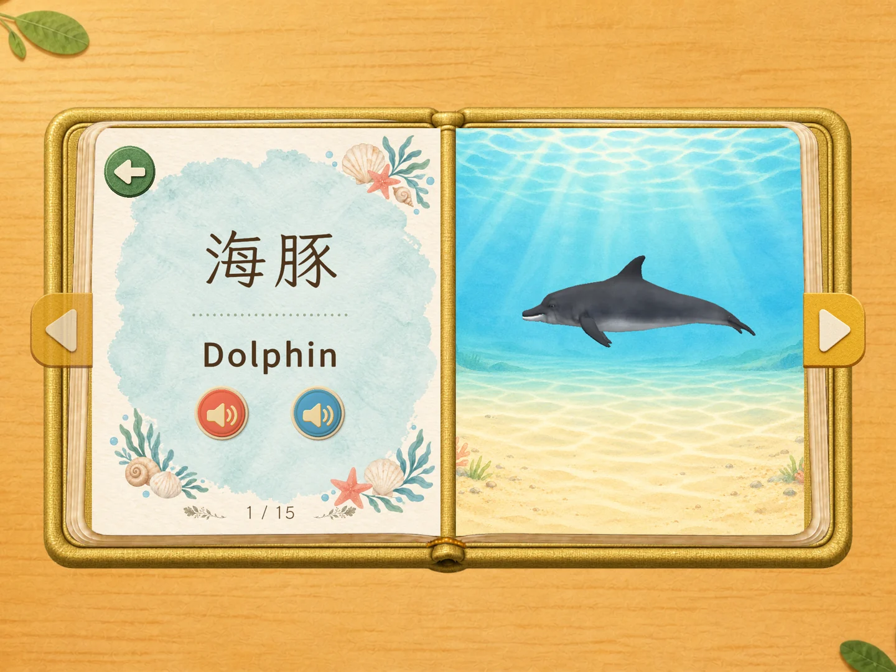
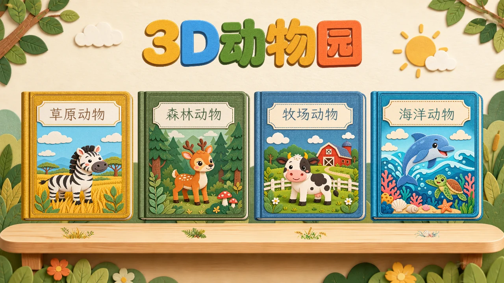

GRASSLAND10 种动物
草原动物
斑马、长颈鹿、大象、狮子……
在阳光下，发现不同的身影。
给好奇心，一座小小动物园
3D动物园
从草原到海洋，和 45 位动物朋友见面。
把观察、聆听和探索，放进一本温暖的互动绘本。

动物朋友
主题绘本
语言发音
小小的手指，
大大的好奇心。
01 / FOUR LITTLE WORLDS
在草原上散步，去森林里探险。
看看热闹的牧场，再潜入蓝色海洋。
斑马、长颈鹿、大象、狮子……
在阳光下，发现不同的身影。

狐狸、棕熊、老虎、大猩猩……
听一听，林间传来了谁的声音？

奶牛、马、绵羊、鸭子……
和熟悉的小伙伴打个招呼。

海豚、绿海龟、小丑鱼、海星……
一起游进奇妙的水下世界。
02 / LOOK, LISTEN & EXPLORE
从纸上的插画，到眼前的立体动物。
让每一次轻点，都有新的发现。

从二维绘本进入 3D 展示。拖动旋转，双指缩放，仔细看看动物的外形和花纹。
听动物的中英文名称，再听一段中文语音介绍。让观察与聆听自然结合。
轻点动物，欣赏动作与互动音效。翻到下一页，继续认识新的动物朋友。
03 / MADE FOR QUIET MOMENTS
像翻开一本喜欢的书，随时开始一段小小探索。
不赶进度，陪孩子慢慢观察、慢慢认识。

不需要注册账号。安装完成后，应用内的绘本、动物模型和语音内容可离线使用。
请先检查设备音量、静音状态和蓝牙音频输出。中文、英文名称可通过书页上的两个扬声器按钮播放。
在书页中点击 3D 按钮显示立体动物，拖动旋转、双指缩放，点击动物查看动作。使用书页两侧箭头翻页，返回首页可以换一本书。
3D动物园正在准备上架 App Store。正式上线后，我们会在这里更新下载入口。